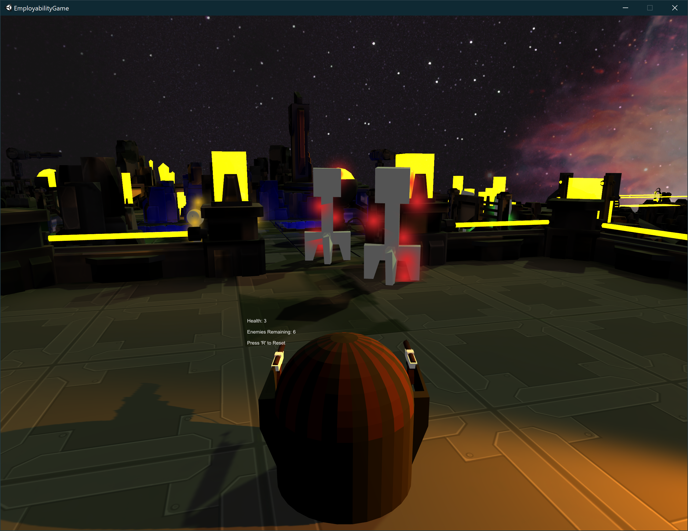

Games
In addition to the information below. code can also be viewed on my GitHub page https://github.com/CalP997
Quiz Game
One of the first games created as a college group project where a program had to be created for a specific target audience. This was created in Unity 2D utilising buttons and canvases to create the quiz setup. The program was created with younger children in mind and has different difficulty options available being easy medium and hard, each consisting of a set of 10 questions. The questions order is not randomized, with the questions being defined as an array from 0-9. Scoring is calculated throughout the course of the game, rather than at the end of the quiz with each correct answer adding 1 to the scoring with the highest score attainable being 10. When a question is answered, the correct answer is revealed to the player through the use of an animation, removing one of the button tiles to show if their answer was correct or incorrect. Once completed the user will be taken to a completion splash screen, from which they can navigate back to the menu to either take another quiz or exit the game.
Tie Fighter Combat
This game is another created for a college project as a part of the games unit on my HND course. This game is a space invader style, star wars inspired game created in Unity 2D with sprites as the character and enemy models. All sprites were created in the Piskel sprite editor and imported into Unity as sprite sheets in order to create the animations. There are sprites for explosions, projectiles (enemy and player) and ships. In this game the player uses the arrow keys to move and spacebar to shoot. The aim is to achieve the highest score possible without dying (3 lives are given to the player at the start). The player can die through collisions with enemy ships or their projectiles. In doing so the player will both lose a life and trigger the explosion animation. There is no hard coded time limit to this game although a timer is involved. This timer will increase the number of enemy ships on screen the longer the player survives. Enemy spawn is set to an empty game object covering the top area of the screen. Every enemy killed in game will increase score by 100 points.
Dungeon Dilemma

Created as a group project for the games design unit of my University course, this is a VR game created in Unity where the player is trapped in an escape room dungeon environment with different puzzles to complete in order to escape. Work was split between team members with myself working on object interaction. This involved integrating appropriate provided VR code onto game models/objects such as chests so that they can be opened. Interactivity was done through ray interactivity where anything that lines up with the ray 'line' can be interacted with. This allows the player to open chests, pick up keys etc. In addition to this, all interactable models were created and textured in Blender including stone tablets, keys and an openable chest (top/bottom as seperate models) that was animated to open within Unity using a hinge rotation, created using the default cyclinder shape within Unity.
Virus Game
This is a small game created in a short time window as a part of my employability module in university. This was a group project consisting of 5 people, work was split between the group. I was tasked with model creation. Models created for this project are the enemies, player and weapons. All were modelled and textured within Blender. With the theme of the game being viruses, inspiration of the models was taken from actual viruses and given a digital rework. As the final hand in version of the game was not created by myself, there are some aspects of the models that are missing despite being provided, these being enemy animations for movement and enemy textures.
Exploration Game (Unity)

Part of my end of year project, this is one half of my project to test speeds (frame rate, loading etc) between games created in both Unity and Unreal on different devices. Builds of these games have been created for both Mac and Windows devices tested on both PCs and laptops of differing specifications. Since the focus of this project was on the testing, there is very little in terms of game mechanics. The player is tasked with moving from level to level using the teleport pads that transport them to different planets (levels) the loading screens for the planets feature an animated model of the planet that will rotate at a set speed. rotation is not set at a 90 degree angle to make the rotations feel more natural. Loading of the levels is complete when all assets inside of the level have been loaded, once done the progress bar will complete and the player is loaded into the level. This game has the player make use of a scanning device that uses lighting to determine the players proximity to the ship part. When a green light appears, the player is close to the part. This light will be red when the part is not in close proximity to the player. As the focus of this game was not the mechanics itself, the player simply had to enter the collision box of the part in order to pick it up. This game also consists of both a menu system and a pause option that allows the user to either quit the game from pausing or return to the menu. All assets were designed, modelled and textured within blender with custom textures also being used on the planet levels (plains and skyboxes) and the menus.
Exploriation Game (Unreal)

This is the latter half of my end of year project split between Unity and Unreal and is also the first game that I had created with UE4. The games for both Unity and Unreal follow the same basis (an exploration style game where the player transports to a planet to find parts for a ship) with the locations themselves being the main difference. Models are shared in some instances between each game (the hub ship, scanner). Gameplay itself is very simmilar between the 2 with the player starting in a hub and transporting to other planets. again, the player only needs to overlap the part collision box in order to pick it up. As this was my first unreal project, there is little in terms of actual C++ coding and mainly makes use of Unreal's blueprint system. This was used to create both the menus and edit a first person controller to include the additional functionality of part collision.
Space Survival Game
A recreation/improvemnet of the tie fighter game as the original file was lost. This version of the game abandons the star wars theming to instead use an original style theme, again all sprite assets where created using Piskel and imported into Unity using sprite sheets. Backgrounds were also created in paint for use in both the menus and the game itself. A spawner was created at the top of the screen that spawns enemies periodically (every 5 secs). Every 30 seconds, this spawn timer will decrease by 1 second continuously until the spawn timer reaches the limit of 1 second. The scoring of this game is attached to the player blasters which can be fired using the space bar. As 2 blasters are used, landing both shots on an enemy will result in a double score. The game will end when the players lives are fully depleted. As a menu system as well as a game over screen are used, the player is able to replay the game once defeated in order to attain a higher score.
Other Projects
Customer details and bookings application

One of the first projects completed as a part my end of year project in my second year of college. This app required a "real world" scenario. For this, the workplace of one of my parents, with the solution being developed in Microsoft's Visual Studio. A scenario had to be provided for this project, for which a solution had to be developed. The scenario was that the council required for a system to be created that can manage customers in a queue. Customer details had to be stored in a database and allow for customers to be queued and dequeued though buttons (adding/removing records). This database had to hold approximately 90 customers at a time, with this ammount being created to test if the program could handle records at this capacity efficiently. This application consisted of three sections : the home screen, customer view where customers could view their details by entering their customer number and serach for their details, the staff page (edit records, delete records, search records by ID, enter records and view details). The staff section required a login page. Login details could be entered and stored into the system. When logging in, the program would check to see if the username/password match those that are stored in the system, if correct the user would be logged in.
Text based adventure game
This game was created as a part of my C++ module in my HND course. This is a text based adventure game where the player navigates their way through the story of Star Wars Ep 4. Players have to create a profile in order to play their game, doing so will create a save file and allow for their progress to be saved including any choices they make and objects/items that they obtain. All of this can be viewed when seraching for the save file. this save file can also be deleted by selecting the option from the main menu and enetering the player name. A demo of this is available on the demos page. Each level makes use of different theming/use of colur to differeniate them to the player. The menu splash screen makes use of an custom title logo created through use of a starred border. This was created using multiple for loops to determine star positions in each row/column.
Android Medical App
This app was created in my second year of University as a part of my mobile apps module. This app was created in Android Studio and works on both emulated and actual android devices. This was tested on 2 different devices: a cheaper Xiaomi device and a Samsung device. The app is a medical app that allows users to store their medical information and various functions can be carried out if any results enetered are cause for concern. There are various pages to this app. Users can register with a username and password, these being saved to the device/system. When logged in successfully, the user can view/edit their details, enter any medical readings/information and view/change settings. When entering medical details, if readings are abnormal, the user will be prompted to alert their GP by opening the email app on their phone this process will occur automatically..
HTML sites
I have created 2 HTML based websites. One as part of my HND course and the other being this portfolio site. My first webpage created was only a simple layout comprising of a login, registration and a quiz page. This website would hold user details and allow them to log into the site and gain access to the quiz. This quiz was multiple choice making use of radio buttons to allow users to choose their answers. The second website, being this portfolio, contains many embedded video links, uploaded images and an automatic view switcher for both mobile view and desktop view. Design of this website was aided with the use of Adobe XD.
Mini Java Application
Throughout the course of my HND course, I have created many Java programs ranging in their complexity. Most of these are small scale and focus on a single function or component of java ranging from simple loops and statements through to Java forms and array/SQL integrations. These smaller programs all build towards the final project which was a Java database with MySQL integration. This program allowed users to enter, edit, view and delete data about various countries. Each button on the screen opens a new java form window where functionality can be carried out. For editing and entry, fields are verified both inside java and in MySQL, with some entries also only having set options with drop down boxes and tick boxes. In order for this program to work correctly, a link between JCreator and MySQL had to be established so that the java application can access the SQL database in order to retrieve records.
Python Gesture Based Program

This program was created as part of a team project in University where a multi-window application had to be created that would utilise gesture tracking. I was tasked with creating and designing all windows, screens and non gesture inputs for testing purposes with the other team member being tasked with the interaction code using a microsoft kinect. The interface was designed and created through coding with python. Originally, the plan was to use Kinect integration for the gesture control, but due to complications within the team and the inability to meet face to face due to the pandemic, this was ultimately unfinished.
Bank Health Spa

This program was created for a fictional health spa application that allows users to login, view/edit their membership details and view prices of the activities within the spa. Details are entered through the use of forms where users enter their data into text boxes These activities have discounts for each membership tier (Free, Bronze, Silver, Gold) and calculations have been used to both show the prices of these tiers and apply their discounts to the activities. this allows users to compare the different membership options and see the activities that are supported and discounted by each tier.
Ongoing/Recent Projects
Unreal Test Game
MSc End of year project

My MSc Computing final project was a game to aid in the teaching of programming skills. This game was aimed at a target audience of undergraduate students and was created in the Unreal Engine using a blend of C++ coding and blueprints. The game takes the form of an escape room, where the player needs to problem solve in order to escape. There are 3 levels to the game each themed around a specifc programming area of the Java programming language as well as level theming and puzzle usage. All assets were designed, created and textured within Blender, with animations created within Unreal itself. These animations were tied to the puzzles within each level, for example the animation for opening the final door of the level is tied to the code that detects whether the player has enetered the correct key to open the door and has all items required in order to complete the level. The player navigates through the levels using either the arrow keys or the WASD keys. Intercaction is done through various buttons with different intercations serving different functions (pickups/interactions). Interactions within these levels includes opening doors, picking up puzzle objects, moving walls and pulling levers. The player controller was created from scratch using C++ coding integrating player movement, object interaction and camera movement. There is also some smaller functionality done through blueprints such as playing aniamtions and moving a bookshelf in level 1.
AR Demonstration
This program was created during my work experince with draw and code and allows for the testing of various AR functionality including facial tracking, object placement and image tracking. This application was created in Unity and makes use of various scenes dedicated to each specific AR function. AR core functionality was used to ensure that this application worked correctly on the Android platform. The image tracking function spawns a spider on a spiderman logo. This logo was fed into the program so that when it is seen, it recognises to spawn the spider on top. This spider will track position and rotation of the logo. The object placement functions uses a square placement indicator to track the ground positioning, whether this be a floor, table, chair etc. Tapping the screen will spawn a spider at that location. This can be done indefinitely. The facial tracking function creates a mask over the face when it is detected. All of these functions are linked together through a menu/main menu system, with canvases being used on the function pages.